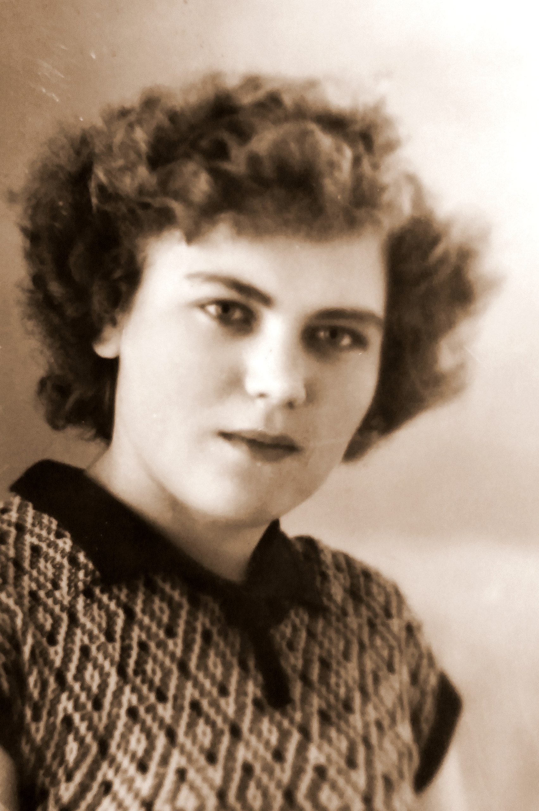

Тамара Павловна, в девичестве Баранова, в замужестве Андрианова, Урусова.
«Светлый, добрый, гостеприимный человек, хранительница традиций, рукодельница» — так вспоминают Тамару все, кто имел счастье её знать.
1938
Рождение. Родилась 4 декабря в селе Тины Нижне-Ингашского района Красноярского края.В разные годы жила в Преображенке, Омске, Вологде и Санкт-Петербурге.
1943
Переезд к бабушке и дедушке. В марте мать привезла Тамару в село Преображенку. После смерти матери в декабре туда же привезли сестру Марию. Сёстры Вера и Надежда остались в Омске с отцом.
1943-50-е
Дедушка Алексей (Капустин). В годы гонений на церковь дед тайно служил, причащал людей. Тамара помогала ему читать на церковно-славянском. По его молитвам девочка исцелилась от тяжёлой болезни.
1950-60-е
Первый брак в Омске. Был заключён не по воле Тамары. Прожив недолго, уехала в Берёзовск, затем в Вологду.
1961-62-е
Второй брак На танцах в клубе Кувшинова познакомилась с Эдуардом из деревни Обросово. Мать Эдуарда, Илария, благословила невестку иконой от священноисповедника Александра (Орлова).
1980
Развод и переезд. Развелась с Эдуардом. Вышла замуж за Урусова Каюма Сабержаковича и переехала в Ленинград (Санкт-Петербург).
1981
Болезнь и исцеление В Вологде заболела, врачи лечили от аллергии. В Ленинграде попала в больницу на Чёрной речке, узнала диагноз «онкология». Лечилась народными средствами — болезнь отступила.
2001
Рак груди. Ампутация молочной железы.
2003
Рак лёгких. Врачи не давали надежды, но Тамара Павловна собрала волю и прошла химиотерапию. В июне успела переоформить квартиру на дочь.
2004
Кончина. 27 июня 2004 года Тамары Павловны не стало.
Рукодельница Тамара умела шить, вязать и плести кружева. Сама ходила одетая «как с картинки», дочку Ирину наряжала как куколку. Шила по выкройкам из журналов «Работница» и «Крестьянка».
Икона из Обросово. В семье хранится икона преподобного Серафима Саровского с дарственной надписью от священноисповедника Александра (Орлова) — благословение, переданное через мать второго мужа.